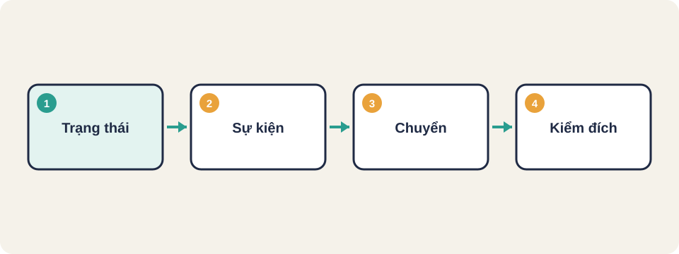
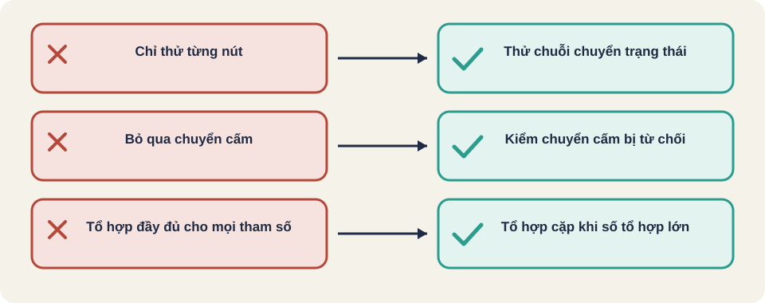

Hình vẽ gốc, dùng để minh họa thứ tự các bước chính của bài.
Ba cách thiết kế ca khi hành vi phụ thuộc trạng thái, nhiều điều kiện, hoặc nhiều tổ hợp cấu hình: chuyển trạng thái, bảng quyết định, tổ hợp cặp.

Hình vẽ gốc, dùng để minh họa thứ tự các bước chính của bài.
Một học liệu có năm trạng thái: nháp, chờ duyệt, đã duyệt, yêu cầu sửa, bị chặn. Nếu chỉ viết ca cho từng nút, bạn sẽ bỏ sót những chuỗi thao tác khiến hệ thống vào trạng thái sai. Cần một cách nhìn theo trạng thái.
Kiến thức chung, viết lại bằng lời của người soạn bài.
Thuật ngữ trong slide này: Trạng thái (state): Tình trạng hiện tại của một đối tượng, quyết định nó phản ứng thế nào với sự kiện.
Kiến thức chung, viết lại bằng lời của người soạn bài.
Thuật ngữ trong slide này: Trạng thái (state): Tình trạng hiện tại của một đối tượng, quyết định nó phản ứng thế nào với sự kiện. · Chuyển trạng thái (transition): Bước đi từ một trạng thái sang trạng thái khác khi có sự kiện, có thể có điều kiện.
Thuật ngữ trong slide này: Trạng thái (state): Tình trạng hiện tại của một đối tượng, quyết định nó phản ứng thế nào với sự kiện.
| Từ \ Sự kiện | Gửi duyệt | Duyệt | Yêu cầu sửa |
|---|---|---|---|
| Nháp | Chờ duyệt | Cấm | Cấm |
| Chờ duyệt | Cấm | Đã duyệt | Yêu cầu sửa |
| Yêu cầu sửa | Chờ duyệt | Cấm | Cấm |
| Đã duyệt | Cấm | Cấm | Cấm |
Bảng minh họa do người soạn lập. Chuyển thật của app cần kiểm trong code trước khi dùng làm đặc tả.
Bảng quyết định (decision table) liệt kê các điều kiện, rồi mỗi cột là một tổ hợp giá trị đúng hoặc sai, kèm kết quả. Với k điều kiện nhị phân, có tối đa 2 mũ k luật. Mỗi luật thường là một ca.
| Điều kiện | Luật 1 | Luật 2 | Luật 3 | Luật 4 |
|---|---|---|---|---|
| Là thành viên | Đúng | Đúng | Sai | Sai |
| Đơn trên 500 nghìn | Đúng | Sai | Đúng | Sai |
| Giảm giá 10% | Có | Không | Không | Không |
Ví dụ tự đặt ra để minh họa cách lập bảng.
Thuật ngữ trong slide này: Bảng quyết định (decision table): Bảng liệt kê tổ hợp điều kiện và kết quả, mỗi cột là một luật.
Khi có nhiều tham số, số tổ hợp đầy đủ tăng rất nhanh. Tổ hợp cặp (pairwise) chỉ yêu cầu mỗi cặp giá trị của hai tham số khác nhau xuất hiện ít nhất một lần trong các ca. Ví dụ: 3 trình duyệt, 3 hệ điều hành, 2 ngôn ngữ là 18 tổ hợp đầy đủ, nhưng thường chỉ cần khoảng 9 đến 10 ca để phủ mọi cặp.
Con số 9 đến 10 là ước lượng theo kinh nghiệm cho cấu hình này, cần công cụ sinh tổ hợp để có con số chính xác.
Thuật ngữ trong slide này: Tổ hợp cặp (pairwise): Cách chọn ca sao cho mọi cặp giá trị của hai tham số đều xuất hiện ít nhất một lần.
Thuật ngữ trong slide này: Trạng thái (state): Tình trạng hiện tại của một đối tượng, quyết định nó phản ứng thế nào với sự kiện. · Chuyển trạng thái (transition): Bước đi từ một trạng thái sang trạng thái khác khi có sự kiện, có thể có điều kiện.
Một form đăng ký có ba tham số: loại tài khoản (4 giá trị), thiết bị (3), ngôn ngữ (2). Hãy chọn kỹ thuật phù hợp và giải thích vì sao không dùng tổ hợp đầy đủ.
Bảng quyết định có 5 điều kiện nhị phân. Tối đa bao nhiêu luật trước khi rút gọn? Nếu bảng có 6 điều kiện thì sao?
Thuật ngữ trong slide này: Bảng quyết định (decision table): Bảng liệt kê tổ hợp điều kiện và kết quả, mỗi cột là một luật.

Thuật ngữ trong slide này: Trạng thái (state): Tình trạng hiện tại của một đối tượng, quyết định nó phản ứng thế nào với sự kiện. · Chuyển trạng thái (transition): Bước đi từ một trạng thái sang trạng thái khác khi có sự kiện, có thể có điều kiện. · Tổ hợp cặp (pairwise): Cách chọn ca sao cho mọi cặp giá trị của hai tham số đều xuất hiện ít nhất một lần.
Trạng thái (state)
Chuyển trạng thái (transition)
Bảng quyết định (decision table)
Tổ hợp cặp (pairwise)